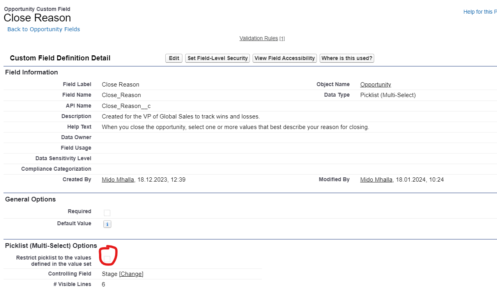

A common Trailhead issue many people face is this error: “An unexpected error occurred while inserting Opportunity records and we couldn't check your work. Make sure Opportunity records can be inserted in this org, and click "Check Challenge" again. ”
In most cases, this happens because of incorrect picklist restrictions or field dependency settings on the Opportunity object.
Trailhead tries to insert Opportunity records in your org while checking the challenge. If your Opportunity fields are restricted in a way that blocks those values, the challenge fails.
First, make sure the Close Reason field is not restricted.

Uncheck the restriction as shown above
Next, verify that the dependency settings include all needed values.
After making these two changes, go back to Trailhead and click Check Challenge again.
In most cases, this resolves the issue and the challenge passes successfully.
You can also check the original discussion here:
Trailhead Community Discussion
← Back to Apex